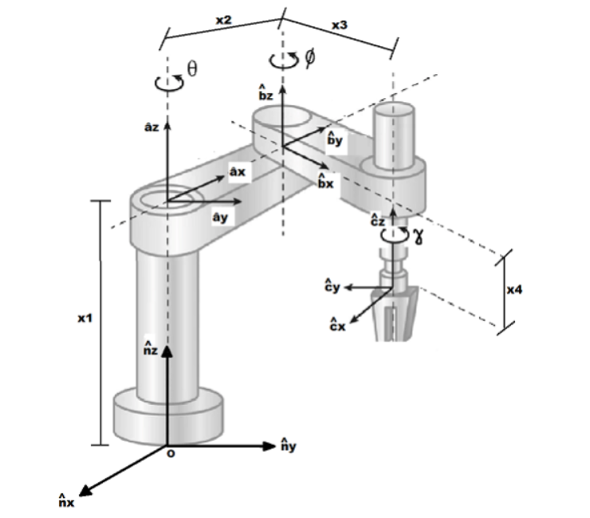

Estudante de Engenharia Mecânica e Técnico em Informática.
Visualizar o código completo.

Após importar as bibliotecas sympy e sympy.physics.mechanics, os referenciais e as variáveis são declaradas para dar sequência aos cálculos da cinemática.
Para visualizar o modelo do robô ir até o código completo.
Referencial inercial:
N = ps.ReferenceFrame('N')Referenciais móveis:
A = N.orientnew('A','Axis',[theta,N.z])
B = A.orientnew('B','Axis',[phi,A.z])
C = B.orientnew('C','Axis',[gamma,B.z])Variáveis das distâncias entre as origens dos sistemas referenciais:
x1,x2,x3 = sy.symbols('x1 x2 x3')
x4 = ps.dynamicsymbols('x4')
Variáveis dinâmicas:
theta,phi,gamma = ps.dynamicsymbols('theta phi gamma')
Cinemática
Velocidades e acelerações angulares dos referenciais:
A.ang_vel_in(N)
A.ang_acc_in(N)
B.ang_vel_in(N)
B.ang_acc_in(N)
C.ang_vel_in(N)
C.ang_acc_in(N)